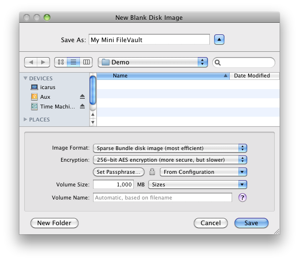

This creates an empty disk image with the specified format and size and mounts it in the Finder. The blank disk image acts as a virtual disk. Applications can directly read and write to files stored on the disk image, but the files disappear when you eject the disk image. Double-click the disk image file to make its contents accessible again.
By setting the disk image to be encrypted, your virtual disk can act as a mini FileVault. When using FileVault, your entire drive (Mac OS X 10.7) or home folder (Mac OS X 10.6 and earlier) is encrypted. This is slow, makes your data more susceptible to corruption, and (on Mac OS X 10.6 and earlier) limits the ability to back up and recover files using Time Machine. Disk images created by DropDMG use the same encryption technology as FileVault, and they avoid FileVault’s drawbacks by only encrypting the files that you choose.
